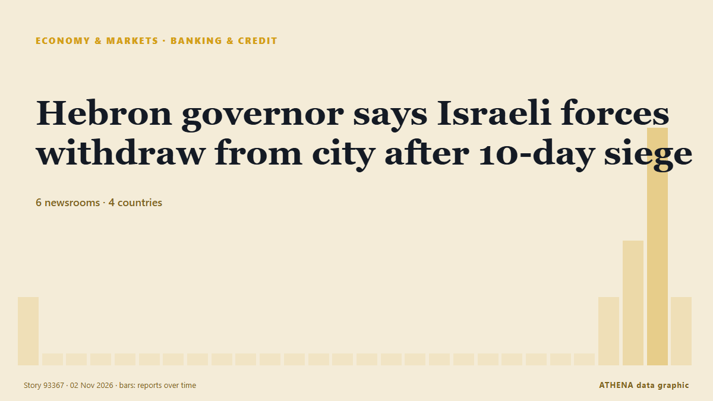

Τράπεζες & πίστη
ΧορηγούμενοΠαρουσιάζεται από  Cybernetics and Artificial Intelligence Lab Welcome to the Cybernetics and Artificial Intelligence Laboratory, established at the Department of Business Administration of the National
Cybernetics and Artificial Intelligence Lab Welcome to the Cybernetics and Artificial Intelligence Laboratory, established at the Department of Business Administration of the National
| 20 Οκτ | 0 |
|---|---|
| 21 Οκτ | 0 |
| 22 Οκτ | 0 |
| 23 Οκτ | 0 |
| 24 Οκτ | 0 |
| 25 Οκτ | 0 |
| 26 Οκτ | 1 |
| 27 Οκτ | 0 |
| 28 Οκτ | 2 |
| 29 Οκτ | 4 |
| 30 Οκτ | 8 |
| 31 Οκτ | 3 |
| 1 Νοε | 3 |
| 2 Νοε | 2 |
Οι τίτλοι των ειδήσεων παρουσιάζονται στα αγγλικά, όπως δημοσιεύτηκαν.

Hebron governor says Israeli forces withdraw from city after 10-day siege
Hebron Mayor Youssef al-Jaabari says families forced from their homes can return and students can go to school. από Al Jazeera English
African lenders formally establish $5 billion energy bank
The African Export-Import Bank and the African Petroleum Producers' Organisation have formally established the Africa Energy Bank, according to a statement from Afreximbank on Saturday. από MyJoyOnline
Westpac NZ’s profit slips as lending grows
The bank's net interest margin fell to 2.23%, from 2.32%. από BusinessDesk
Israeli army arrests 5 Palestinians in West Bank raids
Israeli forces raid homes of Palestinians in Nablus, Qalandiya refugee camp, according to Palestinian Prisoners’ Media Office. από Anadolu Agency (English)
A retired student-loan borrower is fighting for public service debt relief. Now he's named in a lawsuit against Trump.
A student-loan borrower was told he earned Public Service Loan Forgiveness, only to have his payments reinstated. από Business Insider
Governor Punjab assures support to addressing key issues of business community
ISLAMABAD: Governor Punjab Sardar Saleem Haider Khan on Saturday assured the business community of the federal capital of his support in resolving its longstanding issues, including the establishment… από Business Recorder
WHO statement on notification of withdrawal of the United States
WHO regrets the United States’ notification of withdrawal from WHO – a decision that makes both the United States and the world less safe. από WHO news
Italy demands release of another group of activists detained in West Bank
(ANSA) - ROME, 30 OTT - The Italian Foreign Ministry has called for the "immediate release" of five Italian activists detained in the West Bank on Thursday while accompanying Palestinian farmers… από ANSA English
Thousands of “ghost students” use AI to steal millions in student loans, DOJ says
Applying for FAFSA may get messy as DOJ “ghost student” crackdown ramps up. από Ars Technica
FG begins N50,000 monthly cash support for poor Nigerians
It warned Nigerians against fraudsters, advising beneficiaries not to disclose their personal identification numbers or Bank Verification Numbers (BVNs) to anyone. από Channels TV
Canada Pledges €500M Toward EU’s €90B Ukraine Loan
Canadian Prime Minister Mark Carney announced on Friday, Oct. από Kyiv Post
European Commission proposes 45 billion euros in funding for Ukraine for 2027
Of this amount, 31.7 billion euros would go toward weapons purchases. από TASS (English)
Bank of Japan's Transactions with the Government (Sept.)
Although core consumer inflation occasionally exceeded the target in the early 2020s, Friday marked the first time the Bank of Japan confirmed that its long-term inflation goal had been achieved. από Free Malaysia Today
New update on DWP benefits changes after announcement this week
There have been questions about timetables. από WalesOnline
Foreign bank branch in UAE fined Dh200 million
Dubai: The Central Bank of the UAE has imposed a financial penalty of Dh200 million on a branch of a foreign bank licensed in the UAE, pursuant to the provisions of the Federal decree law regarding… από Gulf News
Report warns of growing Caribbean demand for long-term care
WASHINGTON, United States (CMC) — The Pan American Health Organisation (PAHO) and the Inter-American Development Bank (IDB) are urging countries across the Americas to strengthen long-term care… από Jamaica Observer
UN Finds Age-Based Persecution of Palestinian Children
Palestinian children were deliberately targeted, a UN commission finds, extending its age-based persecution finding to the occupied West Bank. από TRT World